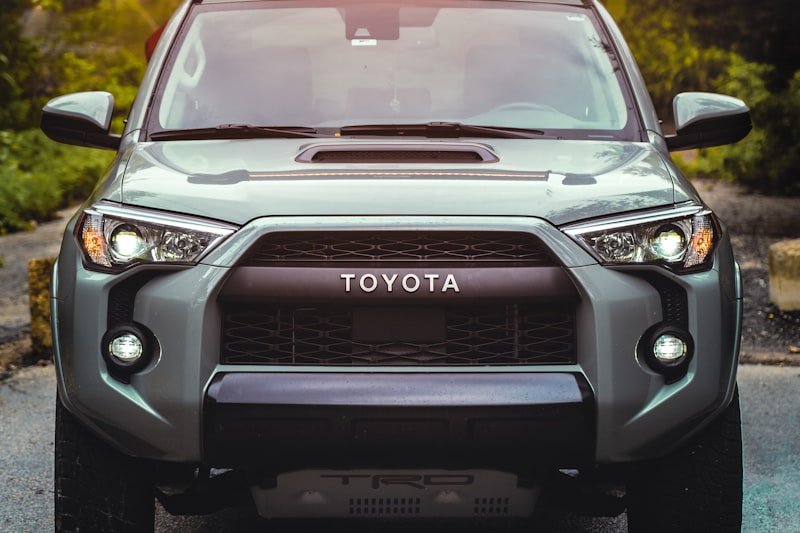

Toyota Repair & Service in Cedar Rapids
Keeping your Toyota reliable for the long haul — expert maintenance and repair at honest prices.
Cedar Rapids Toyota Experts
Toyota vehicles are built for reliability — but reliability depends on proper maintenance. Even the toughest Tacoma or the most efficient Prius needs regular attention to stay at its best. At Cedar Automotive, we provide factory-level Toyota service at independent shop prices, following manufacturer-recommended intervals and using the right parts for your specific model.
We work on the full Toyota lineup: Camry, RAV4, Tacoma, Corolla, Highlander, 4Runner, Tundra, Prius, Sienna, and every other Toyota model on the road. Whether you have a brand-new hybrid or a high-mileage workhorse with 200,000+ miles, we know these vehicles inside and out.
Cedar Automotive is a full-service shop for all makes and models. We invest in ongoing training and professional-grade diagnostic tools to service your Toyota the right way — no dealership visit required. Our technicians understand the engineering that makes Toyotas last, and we help you protect that investment with quality maintenance and honest repairs.
Toyota Services We Provide
- Oil changes (conventional and synthetic, correct weight for your engine)
- Brake service — pads, rotors, calipers, and brake fluid flush
- Timing belt and timing chain replacement
- Transmission service — fluid exchange, filter, and diagnostics
- Hybrid system service — battery health checks, inverter coolant, brake actuator
- Suspension and steering — struts, shocks, ball joints, tie rods
- AC and heating system repair — compressor, evaporator, heater core
- Electrical diagnostics — sensors, wiring, check engine light, modules
- Car key and key fob programming

Why Choose Us for Your Toyota
All-Makes Expertise
We service every vehicle brand on the road — domestic, Asian, and European. That broad experience gives us perspective that single-brand shops simply don't have. Your Toyota benefits from our well-rounded knowledge.
Factory-Schedule Maintenance
We follow Toyota's recommended maintenance intervals to the letter. No unnecessary upsells, no skipped steps. You get exactly the service your vehicle needs, when it needs it.
Honest Independent Pricing
Dealership-quality service without dealership pricing. We use OEM and quality aftermarket parts, explain every repair before we start, and never push work you don't need.
Common Toyota Issues We Fix
Toyotas are durable, but no vehicle is immune to wear. Here are the issues we see most often at our shop.
Frame Rust (Tacoma & Tundra)
Iowa's road salt accelerates frame corrosion on Toyota trucks. We inspect frames for structural integrity and address rust-related issues before they become safety concerns.
Water Pump Failure
Toyota water pumps — especially on V6 models — can develop leaks over time. A failing water pump leads to overheating and potential engine damage. We catch and replace them early.
Oil Consumption (2AZ-FE Engine)
The 2AZ-FE 4-cylinder found in 2007-2011 Camry and RAV4 models is known for excessive oil consumption. We diagnose the root cause and provide repair options to keep your engine protected.
Suspension Clunks
Worn sway bar links, strut mounts, and lower ball joints cause rattling and clunking over bumps — common on Camry, Corolla, and RAV4. We pinpoint the noise and fix it right.
Transmission Fluid Service
Toyota's "lifetime" transmission fluid isn't truly lifetime. Neglected fluid leads to harsh shifting and premature wear. Regular fluid exchanges extend transmission life significantly.
Brake Actuator (Hybrid Models)
Toyota hybrid brake actuators can develop internal leaks or motor failures, causing ABS and brake warning lights. We diagnose and service these systems to restore safe braking performance.
Related Services
Toyota Service FAQ
How often should I change the oil in my Toyota?
Most modern Toyotas using synthetic oil can go 5,000 to 10,000 miles between oil changes, depending on the model and driving conditions. We follow Toyota's recommended maintenance schedule and use the correct oil weight for your specific engine. Call (319) 450-7584 to schedule your Toyota oil change.
Can you service Toyota hybrid vehicles like the Prius and RAV4 Hybrid?
Yes. Cedar Automotive services Toyota hybrid vehicles including the Prius, RAV4 Hybrid, Camry Hybrid, and Highlander Hybrid. We handle hybrid battery health checks, brake actuator service, inverter coolant flushes, and all standard maintenance these vehicles need.
Do you use OEM parts for Toyota repairs?
We offer both OEM and high-quality aftermarket parts for Toyota repairs. We discuss the options with you so you can make the best choice for your budget and your vehicle. Either way, the parts we install meet or exceed factory specifications.
Do you program Toyota keys and fobs?
Yes — we program Toyota keys and key fobs for all models including Camry, RAV4, Tacoma, Corolla, Highlander, 4Runner, and Tundra. We handle transponder key programming, smart key fob replacement, and all-keys-lost situations — typically at significant savings compared to the Toyota dealer. Call (319) 450-7584 for pricing.